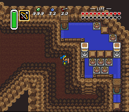
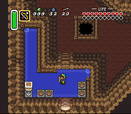
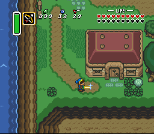
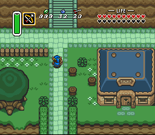
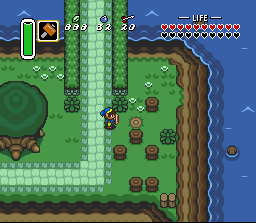
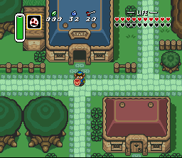
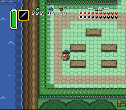

Zelda 3 Challenge - Screen Shots - Batch 4
Here are nine screen shots of the game's opening areas.Kingdom Caverns
This tunnel connects Calatia to Hyrule. (Not accessible)
Through this gate is Zelda 2's town of Saria, via Death Mountain.

Another section of Kingdom Caverns.
Is it a puzzle, or just some treasure?

This is Kingdom Caverns' main exit.
Beyond is the world of Calatia!
Town of Meridia
Just outside Kingdom Caverns.
Welcome to the town of Meridia!

A house beside a river.
Link seems really defensive, here...

The general store, where you'll unload rupees.
North is the upper part of town.

South of a bridge, lots of mushrooms.
Okay, they're pegs at the moment.

Link has just exited the shooting gallery.
...What strange kind of mask is he carrying?

Playing the flute in the town square would
make more sense if there were an audience.
Questions? Ideas? Suggestions?
Write to me!
Return to Zelda3C's main page
This site is not affiliated with nor endorsed by Nintendo in any way.